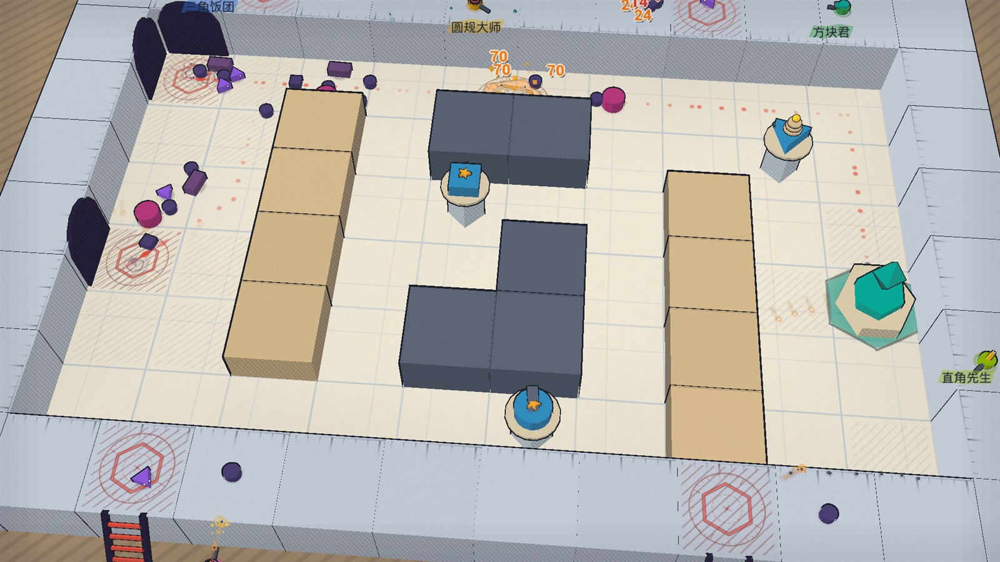
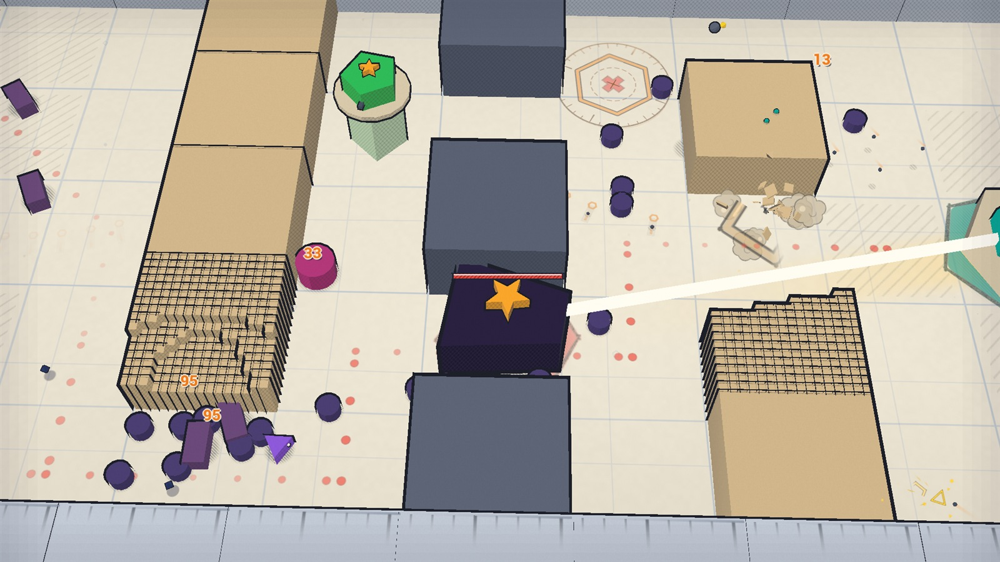
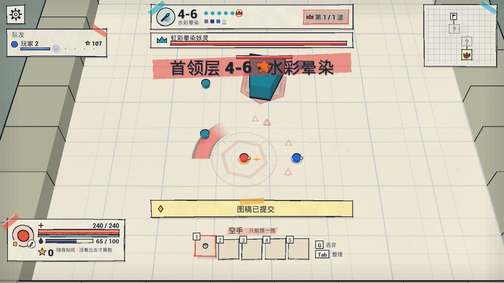
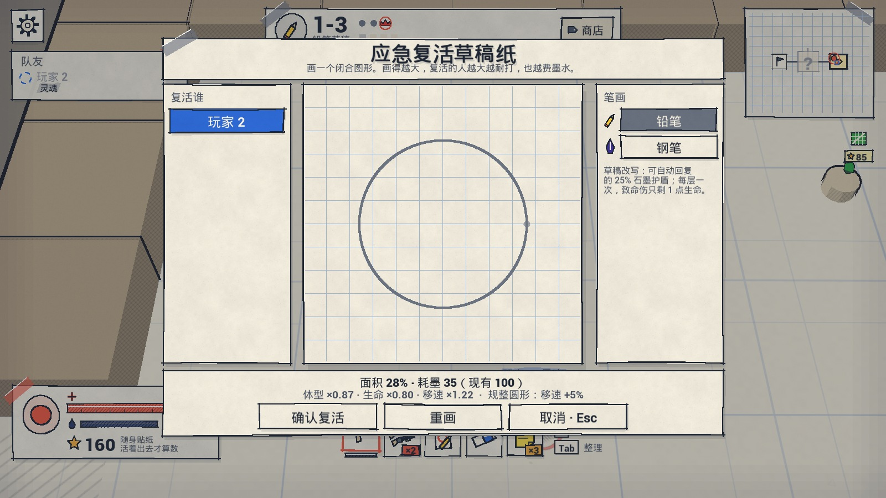
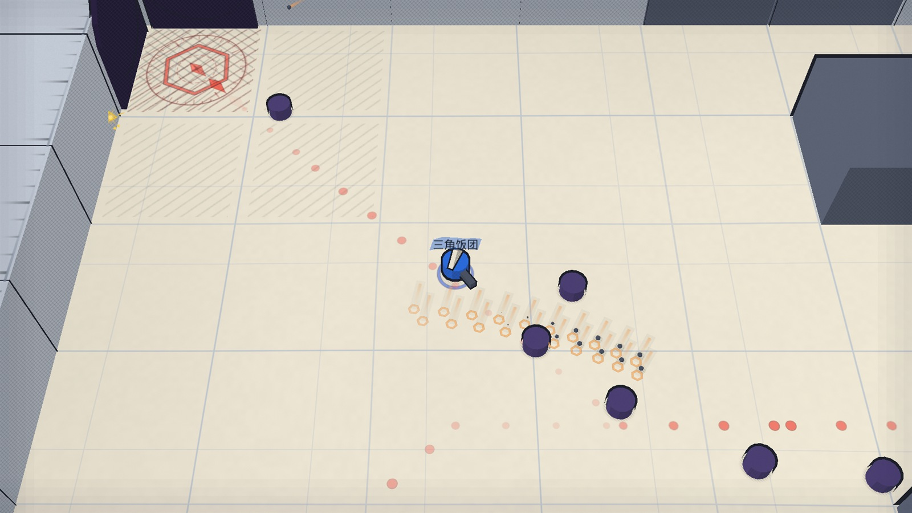
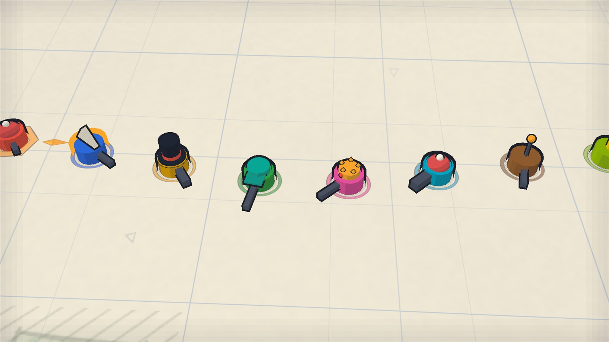
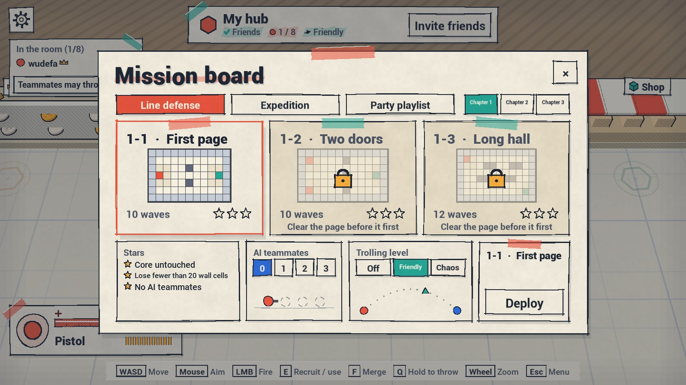

Geometric Warfare
Draw the maze. Hold the line. Throw a friend into trouble.
Geometric Warfare is a top-down action game for 1–8 players, set inside a sketchbook of cardboard walls, ink-stained battlefields, and heavily armed little shapes. Build a defense, shoot through a paper dungeon, or let the party playlist choose your next disaster.
Play solo or gather your friends. A good plan helps. A rocket launcher helps too.

Draw your defense. Then fight for it.
In Line Defense, your walls shape the battle. Draw cardboard barriers across the grid to turn open ground into a winding maze, then cover the route with bolt towers, mortars, Tesla coils, and barbed wire.
Once the wave begins, grab your gun and defend the core yourself. Move between the platform and the battlefield using ladders, cover weak spots, and make every shot count. Enemies follow the paths you leave open, while bosses can tear holes in your carefully drawn plan.
Clear pages, chase three-star victories, and take on harder layouts as your sketchbook opens up.

Take a risk in Expedition
Leave the defense box behind and enter a dungeon drawn on paper. Expedition takes you through four stages and 18 floors of connected combat rooms, shops, treasure, events, and boss encounters.
Collect weapons, carry useful tools, and decide when to spend the stickers in your pouch. Pair matching guns for dual wielding, experiment with weapon nibs, and adapt as pencil, watercolor, fountain pen, ballpoint, and brush themes bring different enemies and hazards to the page.
Your haul only becomes yours when you escape. Push deeper for more rewards, take an early exit when you find one, or risk everything against the final boss. A team wipe leaves the pouch behind.

Draw your friend back to life
Falling in Expedition drops your equipment and leaves you as a ghost. A teammate with a revival pen can bring you back by drawing a new body on a sheet of paper.
The shape, size, and pen you choose affect the result. A larger drawing costs more ink and changes your health and movement; circles, triangles, and rectangles bring their own bonuses. Getting your friend back becomes a small creative decision in the middle of the run.

Cooperation, with a little chaos
Meet in a shared hub, get ready at the mission board, and head out together in rooms for up to eight players. Cover each other, share the work, and rescue a teammate when things go wrong.
You can also pick up and throw teammates. A well-aimed landing can scatter enemies; a badly aimed one may become the story everyone remembers. Choose the room's trolling level to suit your group, from focused cooperation to chaos.
Want the mission board to decide? The Party Playlist rolls an unlocked defense page with a twist, such as rocket launchers for everyone, extra ink, or chaos trolling.

Make your little shape your own
Bring your rewards back to the hub to unlock weapons, research permanent attribute upgrades, and pick out cosmetics and titles. Try a different gun, show off a new hat, compare achievements, or spend a moment in the training corner before the next mission.
Pistols, rifles, shotguns, sniper rifles, machine guns, and rocket launchers give your tiny polygon plenty of ways to make a mess.

Pick a page. Start something.
- Three ways to play: Line Defense, Expedition, and Party Playlist.
- Solo or online co-op: rooms support up to eight players; optional AI teammates are available in solo Line Defense.
- A paper-and-ink world: hand-drawn outlines, graph-paper floors, cardboard structures, and colorful geometric characters.
- Progress between runs: weapons, research, cosmetics, titles, and achievements.
- Windows PC · mouse and keyboard. English, Simplified Chinese, Japanese, and German interfaces.

Still filling the sketchbook
Geometric Warfare is in active development. Gameplay, balance, visuals, and the multiplayer experience are still being refined, and content may change between builds.
Tried it? Leave a comment with your favorite moment, a bug you ran into, or the ridiculous weapon or party rule you would love to see next. Your feedback helps shape the next page.
Screenshots show development gameplay. Some use the Chinese interface; an English interface is available in-game.